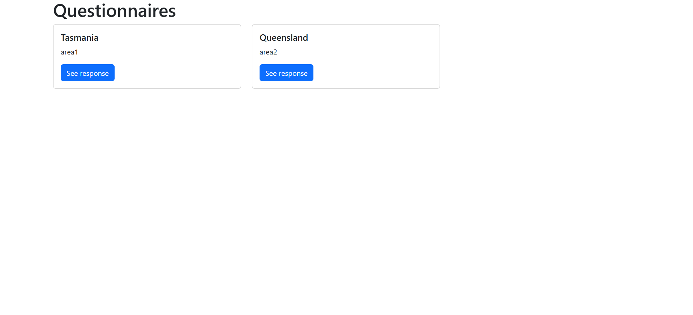
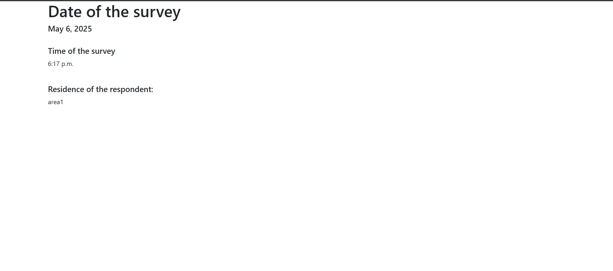

Chapter 09: A model
What is a model in Django?
A Django model is a built-in feature that Django uses to create tables, their fields and various constraints. In short, a Django model is the SQL Database one uses with Django.
The basics of a model include:
Each model is a Python class that subclasses
django.db.models.ModelEach attribute of the model represents a database field.
How to create models in Django?
In Django, models are defined inside a models.py script.
We want to start simple. We want to assume that we want to create a database that for starters, captures the following information:
survey_date- the date at which the survey was undertakensurvey_time- the time at which the survey was undertakenterritory- the administrative region at which the survey was undertakenarea- the state, town or neighbourhood the survey was carried out. Let's keep it very simple
Creating the class
Models in Django are created under classes. We will create a class called Questionnaire which we shall use to create the model we want.
# Create your models here.
class Questionnaire(models.Model):
We would like our first field to have a dropdown of the Australian territories. Therefore, within the Questionnaire class we create a list of constants:
class Questionnaire(models.Model):
WA = "Western_Australia"
NT = "Northern_Territory"
QD = "Queensland"
SA = "Southern_Australia"
NSW = "New_South_Wales"
TA = "Tasmania"
Now, let's create our proper territories list:
class Questionnaire(models.Model):
WA = "Western_Australia"
NT = "Northern_Territory"
QD = "Queensland"
SA = "Southern_Australia"
NSW = "New_South_Wales"
TA = "Tasmania"
TERRITORY_CHOICES = [
(WA, "Western Australia"),
(NT, "Northern Territory"),
(QD, "Queensland"),
(SA, "Southern Australia"),
(NSW, "New South Wales"),
(TA, "Tasmania")
]
Why did we start with the list of constants? This is because we want the choices to be those that can be referenced in case we import the model inside another class.
Now let's create the territory field which will contain our territory choices.
territory = models.CharField(
choices=TERRITORY_CHOICES,
default=WA
)
Note that the choices parameter references the lists referenced by TERRITORY_CHOICES.
Let's add a textfield in which the respondent will manually type out the area that they reside in.
area = models.TextField()
Just before the territory field, let's add survey_date and survey_time fields. We shall set the auto_add_now parameter to True so that the model automatically captures the current day and time respectively. So here is our Questionnaire class so far.
# Create your models here.
class Questionnaire(models.Model):
WA = "Western_Australia"
NT = "Northern_Territory"
QD = "Queensland"
SA = "Southern_Australia"
NSW = "New_South_Wales"
TA = "Tasmania"
TERRITORY_CHOICES = [
(WA, "Western Australia"),
(NT, "Northern Territory"),
(QD, "Queensland"),
(SA, "Southern Australia"),
(NSW, "New South Wales"),
(TA, "Tasmania")
]
survey_date = models.DateField(auto_now_add=True)
survey_time = models.TimeField(auto_now_add=True)
territory = models.CharField(
choices=TERRITORY_CHOICES,
default=WA
)
area = models.TextField()
Migrate the model
Now that you have created your model and updated it, it is time to migrate the model in Django. Why are we doing this? Initially, our australia/models.py file was empty apart from the first line of from django.db import models which imports the models package. Since we have created and updated a new model, we have to generate migration files that capture the changes in a human-readable format. Furthermore, we will specify in which app to generate the migration files for, that is the australia app.
python3 manage.py makemigrations australia
If you run the makemigrations command without the australia flag, it will run migrations for the entire project, which is ideally not what we want.
Running this command creates a database called db.sqlite3 within our project folder.
sanitation
├── db.sqlite3
The migration files are stored in our app's migrations directory.
Now that the changes have been captured, how we do we apply them into our database? The changes recorded in the migration files are captured using the migrate command. Again, we specified that we only wanted to apply the changes for the australia app.
python3 manage.py migrate australia
Django shell
To create instances of our Questionnaire class, we will use Django shell. This is a scripting language much like Python shell which enables us to access the sqlite database. To start using the Django shell interface, type:
python manage.py shell
You will know you are inside the Django shell when you see three carets (>>>).
First import the Questionnaire model.
from australia.models import Questionnaire
Let's create an instance of our first questionnaire and fill some values.
first_questionnaire = Questionnaire(
... territory="Tasmania",
... area="area1"
... )
Thereafter, save this instance into your database using first_questionnaire.save(). This creates a new entry into our Questionnaire table and into our database.
Let's create a second instance.
second_questionnaire = Questionnaire(
... territory="Queensland",
... area="area2"
... )
Now save it into the database.
second_questionnaire.save()
To exit the Django shell, type exit().
Create the views
We want to create the views that will be used in designing our multiple page app. We want our australia app to have two web pages. One is for showing the total questionnaires that have been filled while the second will go into detail at what has been filled into each questionnaire.
Let's start with the first web page that provides a general overview of the responses. We shall name this webpage questionnaires.
You will first import the Questionnaire model at the top of your australia/views.py
from australia.models import Questionnaire
Here is the view:
def questionnaire_index(request):
questionnaires = Questionnaire.objects.all()
context = {
"questionnaires": questionnaires
}
return render(request, "australia/questionnaires.html", context)
Let's go over the above code block.
def questionnaire_index() - this is the function name we shall use to create the function that will retrieve the project details.
questionnaires = Questionnaire.objects.all() - this retrieves all values from the Questionnaire table.
context = {...} - this is a dictionary that stores all values retrieved by the questionnaires variable. When context is passed into the render() function, it provides all the retrieved values to the template.
We also want to have a webpage which will provide further details when a template is clicked. For example, say I click the template for the first questionnaire. This will open another webpage that shows additional contents of the responses collected by the first questionnaire.
Let's create the function called questionnaire_details for showing additional details of the responses.
def questionnaire_detail(request, pk):
questionnaire = Questionnaire.objects.get(pk=pk)
context = {
"questionnaire": questionnaire
}
return render(request, "australia/questionnaire_detail.html", context)
Most of the components in this function are similar to those in the questionnaire_index function. However, inside the parentheses of the function name we can see a pk parameter. In Django, the pk parameter refers to the primary key of every record in your database. This primary key is provided by Django automatically, and is an auto-incrementing integer that progressively increases in the order of 1, 2, 3 and so on. You can access any record in your Django database by using this pk notation.
Since the primary key (pk) we are using is the default provided by Django, we pass it to the questionnaire variable as pk=pk inside Questionnaire.objects.get().
Create the templates
Now that we've created the views, it's time we create the templates that will show what is defined by the views. Inside the templates/australia, create two new templates, questionnaires.html and questionnaire_detail.html.
Inside the questionnaires.html insert the following code.
{% extends "base.html" %}
{% block base_content %}
<h1> Questionnaires </h1>
<div class="row">
{% for question in questionnaires %}
<div class="col-md-4">
<div class="card mb-2">
<div class="card-body">
<h5 class="card-title">{{ question.territory }}</h5>
<p class="card-text">{{ question.area }}</p>
<a href="{% url 'questionnaire_detail' question.pk %}"
class="btn btn-primary">
See response
</a>
</div>
</div>
</div>
{% endfor %}
</div>
{% endblock base_content %}
As mentioned in Chapter 5, the {% extends "base.html" %} copies the base template we defined in the templates folder at project level. The {% block base_content %} {% endblock base_content %} simply copies the Bootstrap template in our base.html and whatever is encapsulated within its block inherits the bootstrap theme found in base.html.
However, we also introduce something else; a jinja for loop. The {% for question in questionnaires %} {% endfor %}. This is similar to a python for loop only that it is written in jinja syntax. The {% endfor %} breaks out of the loop.
Inside this for loop we find the {{ question.territory }} and {{ question.area }} jinja tags. They stand for each value looped by the {% for question in questionnaires %} which references the questionnaires variable in questionnaires = Questionnaire.objects.all() of the Questionnaire class.
Therefore, in essence the for loop will display all information filled on the territory and area field for each round of survey.
Finally, we have the <a></a> tag containing the "{% url 'questionnaire_detail' question.pk %}" url reference. The <a></a> creates links and in this case it creates a button called See response. Clicking on this button will take us to the questionnaire_detail.html that contains more information on the response that was filled in.
The template of questionnaire_detail.html looks below.
{% extends "base.html" %}
{% block base_content %}
<h1> Date of the survey </h1>
<h5> {{ questionnaire.survey_date }} </h5>
<div class="row">
<div class="col-md-4">
<br>
<h5>Time of the survey</h5>
<p> {{ questionnaire.survey_time }}</p>
<br>
<h5>Residence of the respondent:</h5>
<p>{{ questionnaire.area }}</p>
<br>
</div>
</div>
{% endblock base_content %}
The template is very similar to the questionnaires.html webpage. In this case, however, it will reference the questionnaire variable which is in the questionnaire_detail function of our australia/views.py. Django will use the primary key of the item clicked inside questionnaires.html to display more data, in this case survey_date and survey_time inside a different webpage called questionnaire_detail.html. In other words, the survey_date, survey_time and area of the item clicked in questionnaires.html will show up in the questionnaire_detail.html webpage. This url of this additional data will be http://127.0.0.1:8000/australia/questionnaires/<primary_key>/.
Add the routes
The routes are the urls which will be used to access your webpage(s). Create a australia/urls.py file that will contain your urls. First of all, you will import your views.
from australia import views
Importing the views inside australia/views.py will enable us to get the python functions which define the content that gets shown in our templates as methods. For example, below we access the questionnaire_index and questionnaire_detail functions as methods via views.questionnaire_index and views.questionnaire_detail.
urlpatterns = [
path("", views.home, name="home"),
path("sanitation", views.sanitation, name="sanitation"),
path("questionnaires", views.questionnaire_index, name="questionnaires"),
path("questionnaires/<int:pk>/", views.questionnaire_detail, name="questionnaire_detail"),
]
The <int:pk> stands for the integer for the primary key in focus, which is ultimately a particular response.
Now that we have added the urls inside our australia app, it is time we also inform our project app, -- sanitation app that there is a new urls file inside the australia app.
In your sanitation/urls.py file add the path to your australia/urls.py file as shown below.
urlpatterns = [
path("", views.home, name="home"),
path("sanitation", views.sanitation, name="sanitation"),
path("questionnaires", views.questionnaire_index, name="questionnaires"),
path("questionnaires/<int:pk>/", views.questionnaire_detail, name="questionnaire_detail"),
]
Thereafter, run python3 manage.py runserver. Go to the http://127.0.0.1:8000/questionnaires url. Notice the last bit, questionnaires corresponds to the route name defined in the path() function inside our australia/urls.py file.
path("questionnaires", ...),

Click on the See response, it opens a new webpage with the primary number of the response. For example http://127.0.0.1:8000/australia/questionnaires/1/. Again, this path corresponds to the route name we defined in the path() function found in australia/urls.py file.
path("questionnaires/<int:pk>/", ...),
